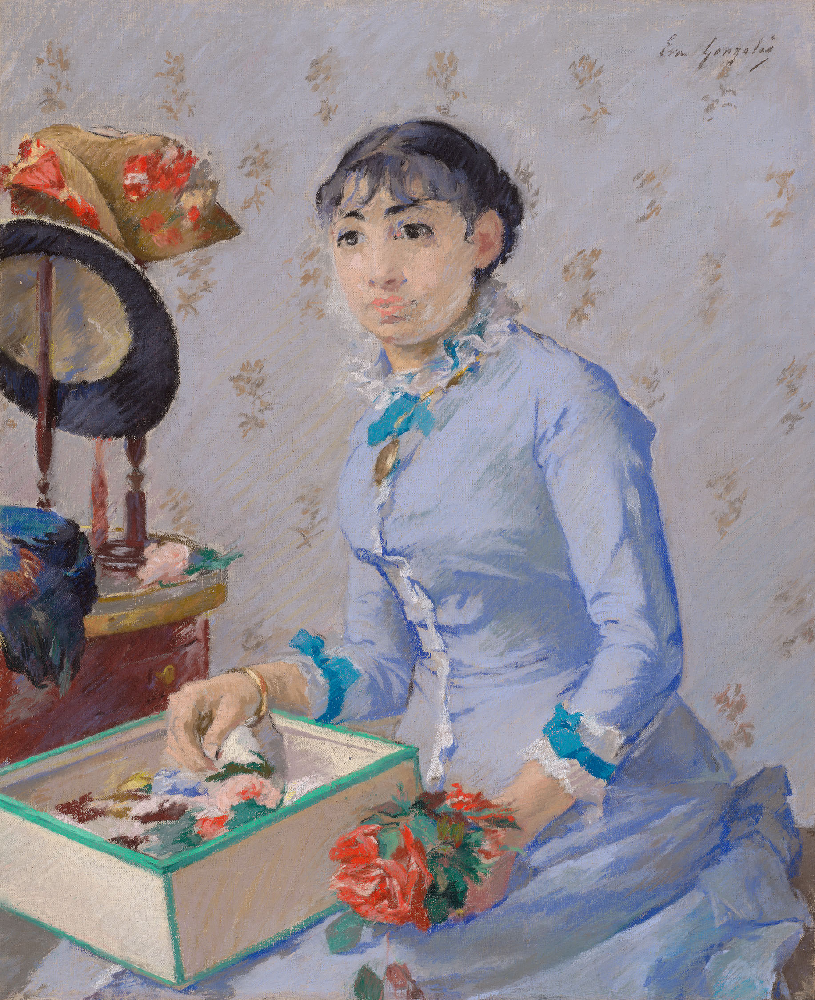
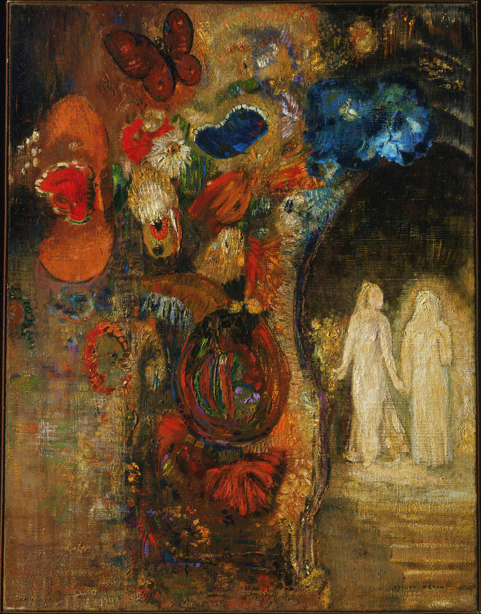
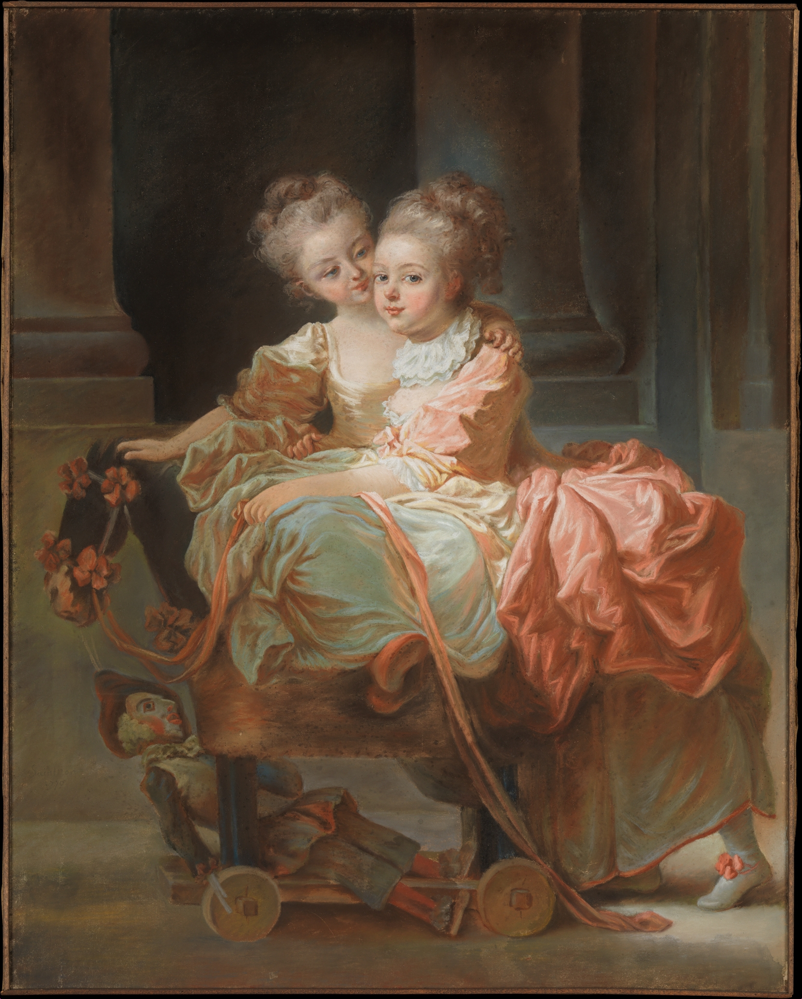
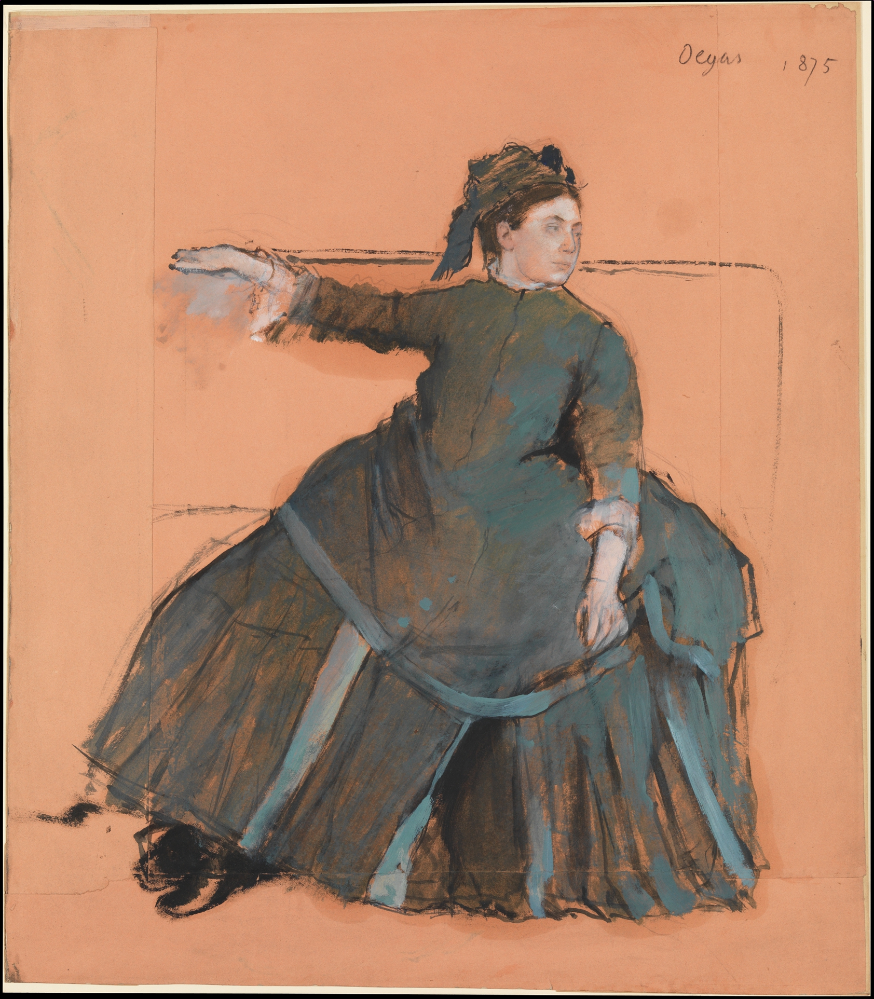

Paint in
patches.
Drop a photograph into the renderer and watch broad colour, mid-tone texture, and detail arrive in order.
Start with a photoYour next painting
No photo selected yet.
The patch map will appear here.
The medium
stays visible.
These public-domain pastel studies and a short oil study show the texture this renderer is reaching for. They are references, not pretend output.




Build the image
in visible passes.
Move through the same order as the command line renderer. The preview is a clear record of what has been painted.
Broad colour
1 / 4
Ready when
you are.
Choose your photo, then run the exact command below in the project folder.
python oil_pastel_patches.py photo.jpg --video timelapse.mp4 --speed 4